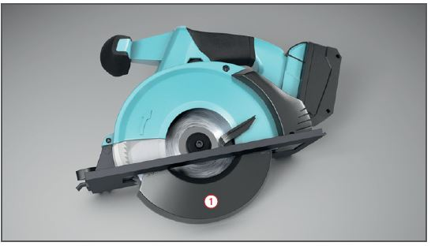
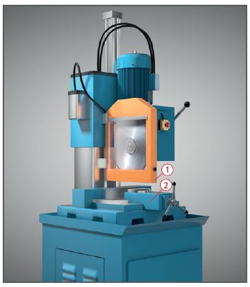
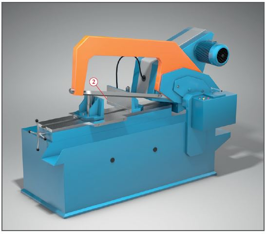

Gefährdungen
- Durch wegfliegende Teile
von Werkstücken und Sägeblatt kann es zu Schnittverletzungen kommen.
- Die Lärmbelastung kann zu
Gehörschäden führen.

Schutzmaßnahmen
- Sägeblätter bis auf den
zum Sägen benötigten Teil verkleiden
 .
.
- Zu sägende Teile fest einspannen
 .
.
- Lange Werkstücke unterstützen.
- Nicht am laufenden Sägeblatt
vorbeigreifen.
- Beschädigte Sägeblätter sofort
auswechseln.
- Keine weichen Materialien (z. B. ausgeglühte Kupferrohre) sägen.
- Hand-Maschinensäge nur
nach völligem Stillstand ablegen.
- Handfeger zur Spänebeseitigung benutzen.
- Niemals Handschuhe beim Sägevorgang tragen.
- Gehörschutz verwenden.
- Beim Sägen in Augenhöhe
und über dem Kopf Schutzbrille
benutzen.

Zusätzliche Hinweise bei
der Verwendung von Kühlschmierstoffen
- Zum Kühlen möglichst Wasser
oder nichtwassermischbare Kühlschmierstoffe, z. B. Bohr- oder Schneidöle, verwenden.
- Bei der Verwendung von
wassergemischten Kühlschmierstoffen,
z. B. Emulsionen, Nitritgehalt und pH-Wert mindestens wöchentlich überprüfen.
- Hautkontakt mit Kühlschmierstoffen
vermeiden. Schutzbrillen oder Gesichtsschutz tragen, wenn die Kleidung benetzt werden kann, auch Schutzschürzen benutzen. Hautschutzmittel verwenden.
- Nicht mehr verwendungsfähige Kühlschmierstoffe in Behältern
sammeln, kennzeichnen und fachgerecht als Sonderabfall entsorgen.
Arbeitsmedizinische Vorsorge
- Arbeitsmedizinische Vorsorge
nach Ergebnis der Gefährdungsbeurteilung
veranlassen (Pflichtvorsorge)
oder anbieten (Angebotsvorsorge).
Hierzu Beratung
durch den Betriebsarzt.
Beschäftigungsbeschränkungen
- Jugendliche über 15 Jahre
dürfen nur unter Aufsicht eines
Fachkundigen und wenn es die
Berufsausbildung erfordert mit
Metallsägen arbeiten.
- Jugendliche unter 15 Jahre
dürfen nicht an diesen Maschinen
beschäftigt werden.
07/2021